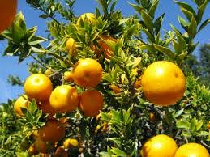

Tips Menanam Tanaman Hias di Rumah
Keberadaan tanaman hias di baik di dalam rumah maupun di luar rumah dapat memberikan efek positif bagi para penghuni rumah tsb. Ada beberapa alasan mengapa banyak orang yang menanam tanaman hias di rumahnya karena tanaman hias dapat menghiasi rumah sehingga rumah tampak asri.....
baca selengkapnya >>>>>>

Tips Agar Pohon Jeruk Cepat Berbuah
Pada umumnya orang sangat menyukai buah jeruk karena rasanya yang manis, agak asam dan baunya sangat menyegarkan. Rasa dari makanan yang diberi perasan jeruk baik jeruk nipis maupun jeruk lemon dapat meningkatkan selera pemakannya. Bahkan bila kita sedang pusing.....
baca selengkapnya >>>>>>